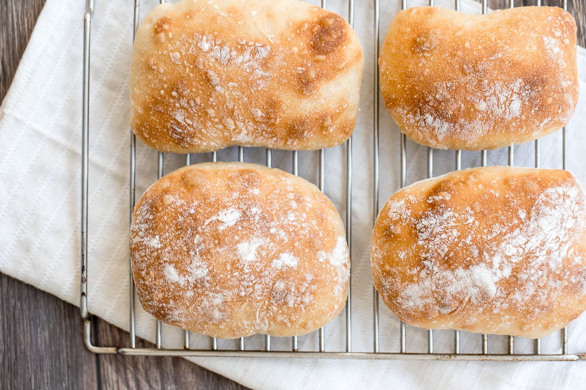
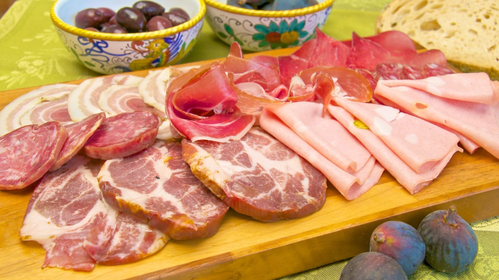
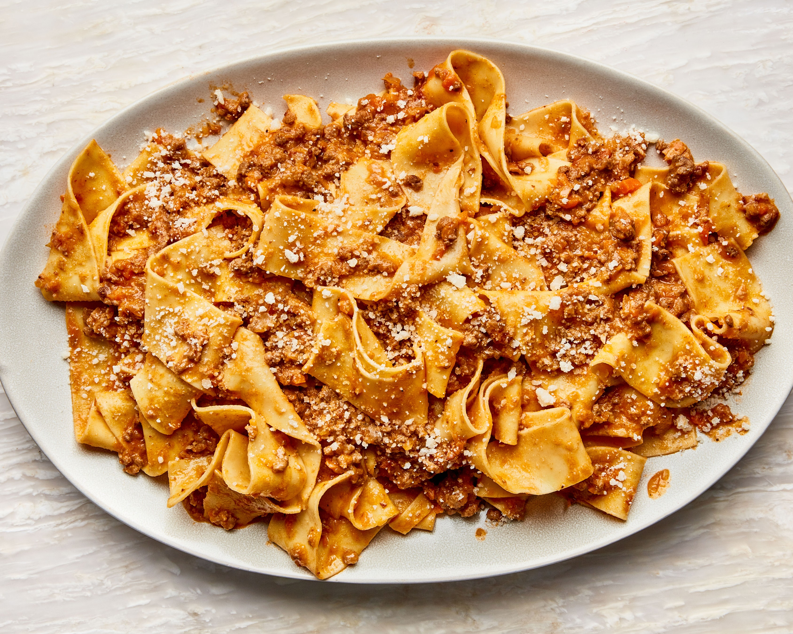
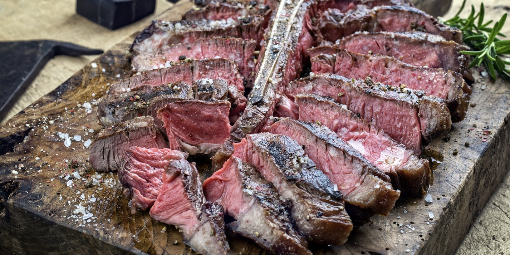
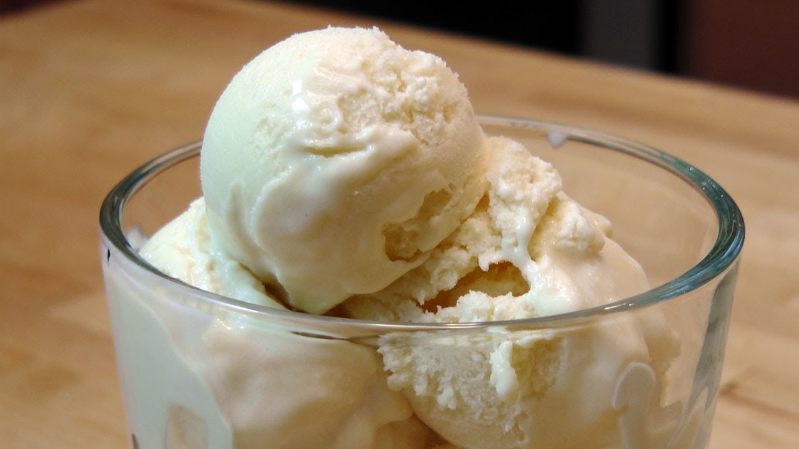

Date:
July 16th, 2021
Pane
Ciabatta Metro
A remastered modern Italian white bread remastered for a dense and moist flavor that remains incredibly soft
Antipasti
Affettati Misti Con Miele e Arancia
A traditional cured meat plate with ham, sausage, and beef. Cured orange and artisan honey served as a side.
Primi
Pappardelle Bolognese
Freshmade, long, and flat pasta with a rich tomato and ground meat (beef, pork, and lamb) sauce cooked with duck fat, arotmatic herbs, and vegetables.
Secondi
Bisceta
Thick beef steak darkened and charred over a smokey grill. Cooked with rock salt and brushed with rosemary. Served continential medium rare.
Dolce
Gelato e Sorbet
Natural flavored dairy and non-dairy frozen treats flavored with lemon, vanilla, and strawberry.
© 2021 Carter McKaughan "I cooka da meatball"